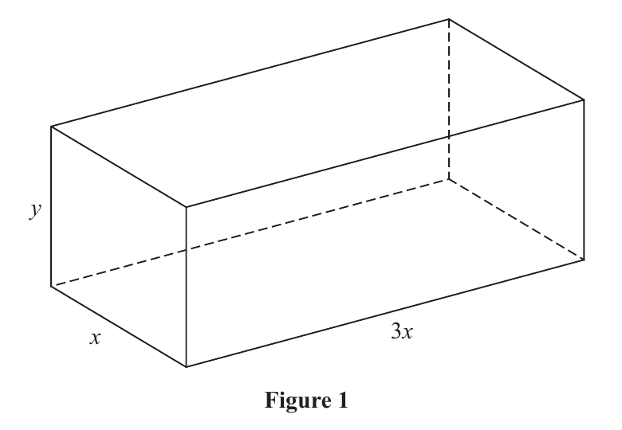
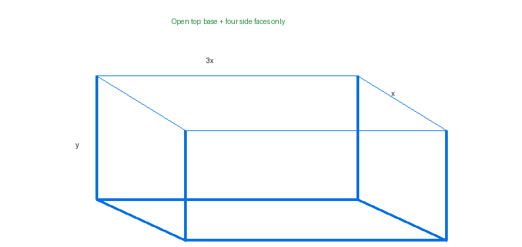

Figure 1 shows an open-topped container used for holding water. The container is in the shape of a cuboid and is made of sheet metal. The base of the container is a rectangle $3x$ metres by $x$ metres. The height of the container is $y$ metres as shown in Figure 1.
Given that the capacity of the container is $120\,\mathrm{m^3}$
(a) show that the area $A\,\mathrm{m^2}$ of the sheet metal used to make the container is given by $A=Px^2+\frac Qx$, where $P$ and $Q$ are positive constants to be found. (4)
(b) Use calculus to find the value of $x$ for which $A$ has a stationary value, giving your answer to 3 significant figures. (4)
(c) Find $\frac{d^2A}{dx^2}$ and hence show that the value of $x$ found in part (b) gives the minimum value of $A$. (2)

Official source figure: Pearson Edexcel WMA12/01 January 2025 Q3 Figure 1.
Not covered in the lesson — official-reference reconstruction below.
[10 marks: (a) 4, (b) 4, (c) 2]
Strategy. Use the fixed volume to eliminate $y$, then enumerate the sheet-metal faces of an open-topped cuboid: one base, two long sides and two short sides. Substitute the height expression into that area so the result depends on the single positive variable $x$.
Why this method applies. Optimisation by single-variable calculus requires one independent variable. The capacity supplies the relation $3x\cdot x\cdot y=120$. The missing top matters: adding a second $3x^2$ face would solve a closed-box problem and change the constants.
Formula or definition first. Volume: $V=3x^2y=120$, hence $y=40/x^2$. Open-top sheet area: $A=3x^2+2(3xy)+2(xy)=3x^2+8xy$.
Full intermediate derivation. Substitute $y=40/x^2$: $A=3x^2+8x(40/x^2)=3x^2+320x/x^2=3x^2+320/x$. Comparing with $A=Px^2+Q/x$ gives $\boxed{P=3}$ and $\boxed{Q=320}$. Units are square metres, and $x>0$ because it is a length.
Difficult transition. The cancellation $8x(40/x^2)=320/x$ uses one factor of $x$ from the numerator against two in the denominator. Losing both powers would make a constant side area, which is physically wrong: changing the base width changes the height required for fixed volume.

Check back / sense check. Dimensional reasoning checks the result. Both $3x^2$ and $320/x$ have units $\mathrm{m^2}$ because 320 carries the volume-derived cubic-metre scale. As $x\to0^+$ the side-area term grows, and as $x\to\infty$ the base term grows, making an interior minimum plausible.
Strategy. Differentiate the one-variable area from part (a), set the derivative to zero, clear the positive denominator and solve the resulting cubic. Select the positive real root because $x$ is a physical length, then round only the final value to three significant figures.
Why this method applies. A differentiable function has a stationary point where its first derivative is zero. The earlier end-behaviour check suggests the area falls from infinity and later rises to infinity, so the positive stationary point is the candidate minimum, but classification is reserved for part (c).
Formula or definition first. Write $A=3x^2+320x^{-1}$. Then $A'=6x-320x^{-2}=6x-320/x^2$. The stationary equation is $6x-320/x^2=0$ with $x>0$.
Full intermediate derivation. Multiply by $x^2$: $6x^3-320=0$. Therefore $x^3=320/6=160/3$. Take the positive cube root: $x=(160/3)^{1/3}=3.764\ldots$. To three significant figures, $\boxed{x=3.76\,\mathrm m}$.
Difficult transition. Multiplying by $x^2$ is safe only because the physical domain excludes $x=0$. The equation has one real cube root; writing a spurious $\pm$ sign would confuse cube roots with square roots. The length condition confirms the positive value.
Check back / sense check. Substitute $x^3=160/3$ into the derivative: $6x-320/x^2=(6x^3-320)/x^2=(320-320)/x^2=0$. The magnitude is consistent with a base roughly $11.3\,\mathrm m$ by $3.76\,\mathrm m$ and a positive height.
Strategy. Differentiate $A'$ once more and evaluate its sign on the positive domain. State the second-derivative test explicitly: a positive second derivative at a stationary point means the graph is locally concave upward and the stationary value is a minimum.
Why this method applies. Part (b) proves only that the tangent is horizontal. A stationary point could be a maximum, minimum or a flatter point. The second derivative measures how the gradient changes; positivity means the gradient increases through zero from negative to positive.
Formula or definition first. From $A'=6x-320x^{-2}$, differentiate to obtain $A''=6+640x^{-3}=6+640/x^3$.
Full intermediate derivation. For every physical $x>0$, both $6$ and $640/x^3$ are positive, so $A''>0$. In particular, using $x^3=160/3$, $640/x^3=640/(160/3)=12$, hence $A''=18>0$. Therefore the stationary point at $x\approx3.76$ gives the $\boxed{\text{minimum area}}$.
Difficult transition. Evaluating with the exact stationary relation is cleaner than substituting the rounded decimal. The exact value 18 avoids rounding noise and directly satisfies the ‘hence show’ command. Merely saying ‘positive’ without displaying $A''$ would omit the requested derivative.
Check back / sense check. The derivative changes from negative at small positive $x$ to positive at large $x$, agreeing with $A''>0$. Also $A\to\infty$ at both ends of the positive domain, so the unique stationary point is not only local but the global physical minimum.